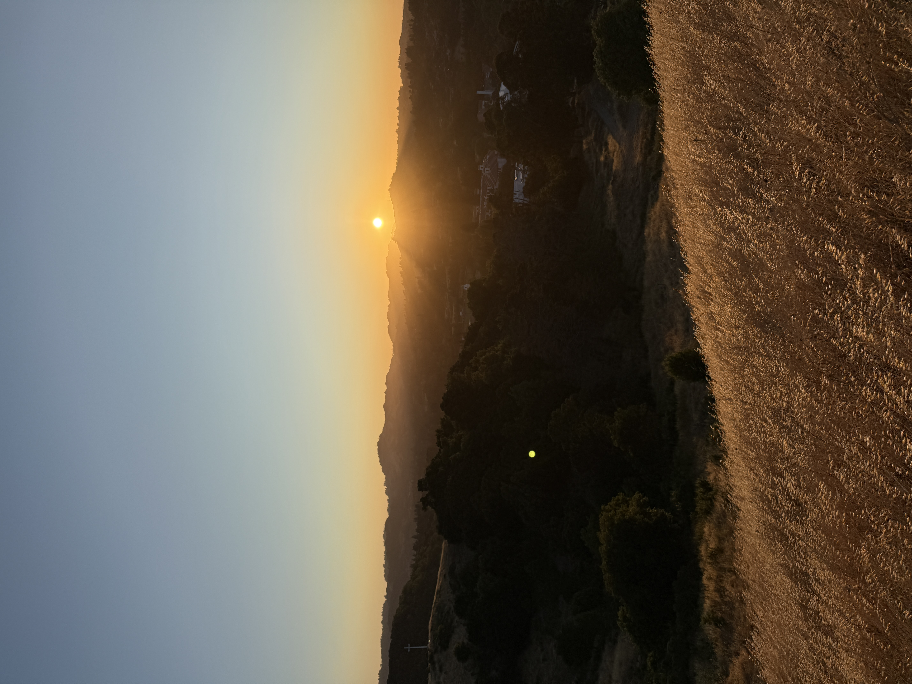
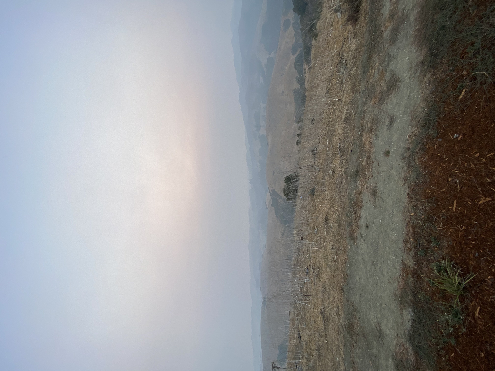
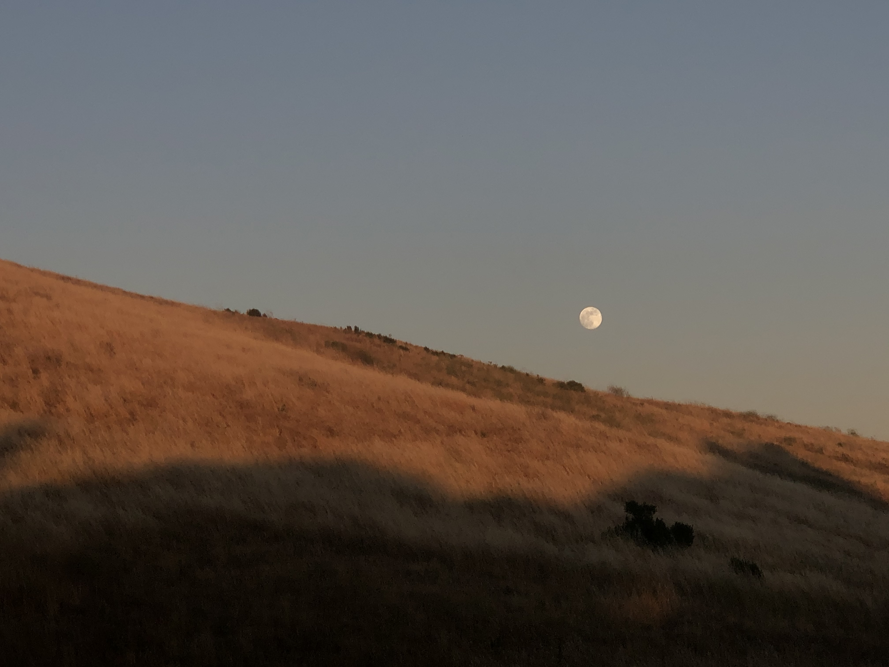

Photography allows me to capture the natural beauty of the places around me. I especially enjoy photographing the hills, sunsets, and changing seasons throughout the Lamorinda area.



Taking these pictures encourages me to slow down and notice details that I might otherwise overlook. Each photograph reminds me of a particular walk, season, or moment that I experienced while exploring.
Continue to Page 3